point
1
施術費負担は0円です
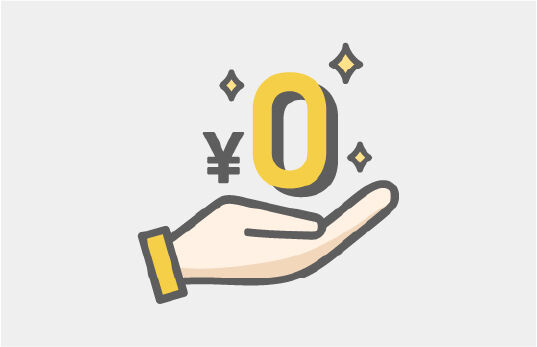

ー交通事故治療ー
岸和田のHAREYAKA+Rebody整骨院
岸和田で交通事故治療ができる整骨院をお探しの方へ。
交通事故のケガは、事故直後には
ということも多くあります。
しかし数日〜数週間後に
といった症状が現れることがあります。
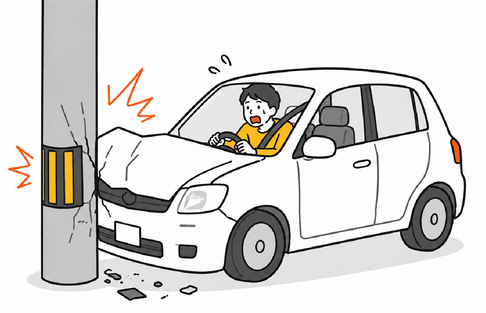
これは、事故の衝撃によって
カラダのバランスや体幹の働きが乱れている可能性があるためです。
岸和田の HAREYAKA+Rebody 整骨院では
交通事故によるケガに対して痛みのある場所だけでなく
事故によって崩れた体のバランスまで丁寧に評価し、施術を行っています。
交通事故後には、
次のような症状が起こることがあります。
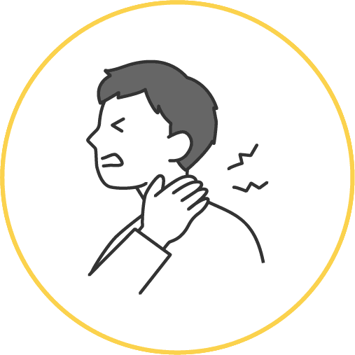
・むち打ち
（首の痛み、首が回らない）
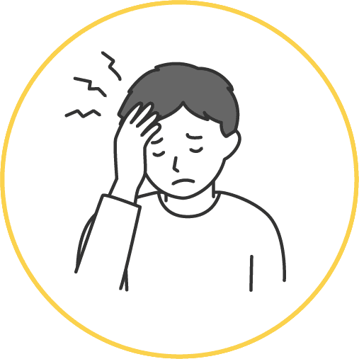
・頭痛
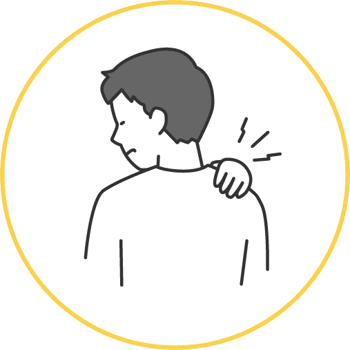
・肩や背中の張り
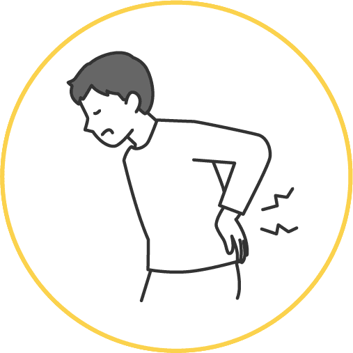
・腰痛
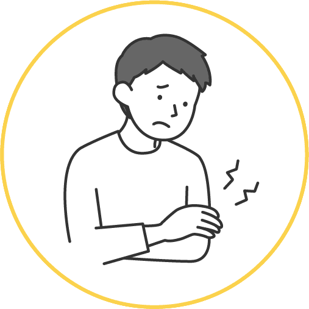
・手足のしびれ
・めまい
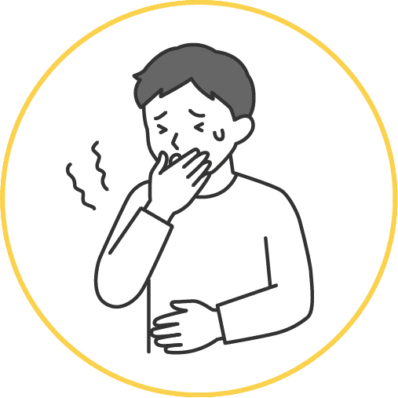
・吐き気
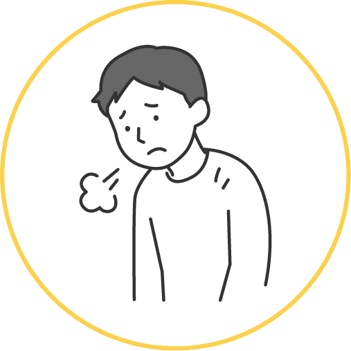
・体がだるい
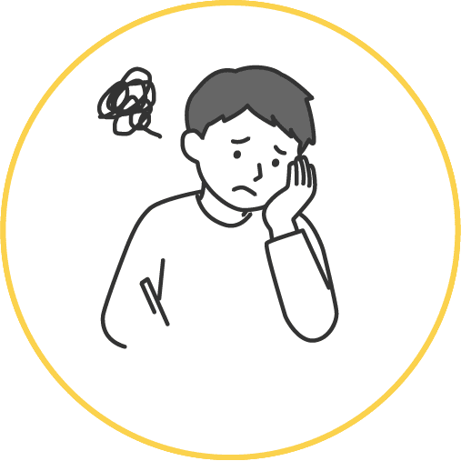
・集中力が続かない
これらの症状は、事故直後ではなく
数日〜数週間後に出ることも珍しくありません。
「大丈夫だと思っていたのに、後から痛みが出てきた」
という方も多く来院されています。
少しでも違和感がある場合は、早めのケアが大切です。
交通事故では、強い衝撃によってカラダが瞬間的に揺さぶられます。
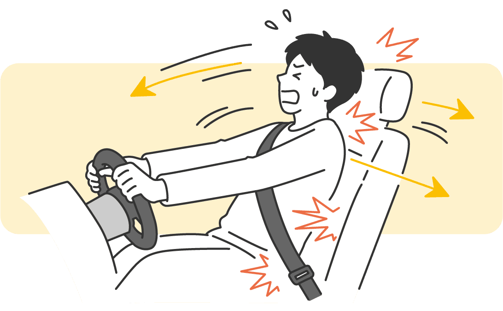
その結果
・首 ・背骨 ・骨盤 ・体幹
のバランスが崩れ、カラダは無意識にかばう動きをするようになります。
すると
・首が痛い ・肩が動かしにくい ・腰に違和感がある
といった症状が出ますが、実際にはカラダの別の部分の
バランスの崩れが原因になっていることも多いのです。
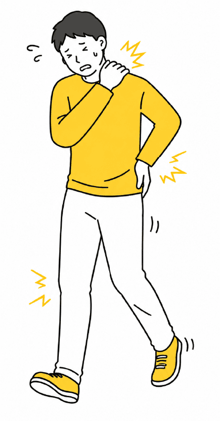
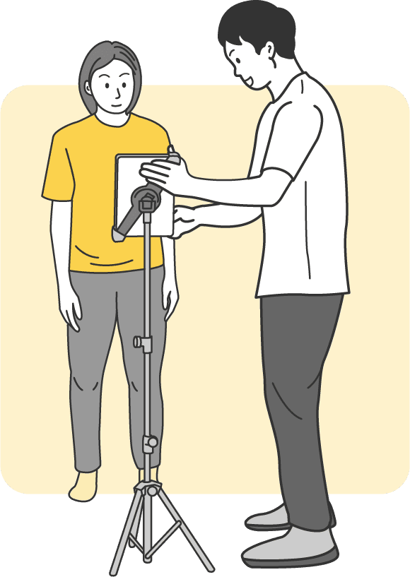
岸和田の HAREYAKA+Rebody 整骨院では
を評価し、事故による体の変化を丁寧に確認していきます。
事故によって崩れた
・カラダのバランス ・体幹の働き ・動きのクセ
を整えることが大切です。
そのため岸和田の HAREYAKA+Rebody 整骨院では

1.整える

2.安定させる

3.再教育する
という流れで、カラダを回復へ導いていきます。
これは普段の施術でも行っている 体幹の再教育の考え方です。
交通事故によるケガでも、カラダが本来の動きを取り戻せるようサポートします。
交通事故によるケガの場合、自賠責保険が適用されるため
窓口負担は0円で施術を受けられる場合があります。
また
なども対応しております。
交通事故後の手続きが分からない方も安心してご相談ください。
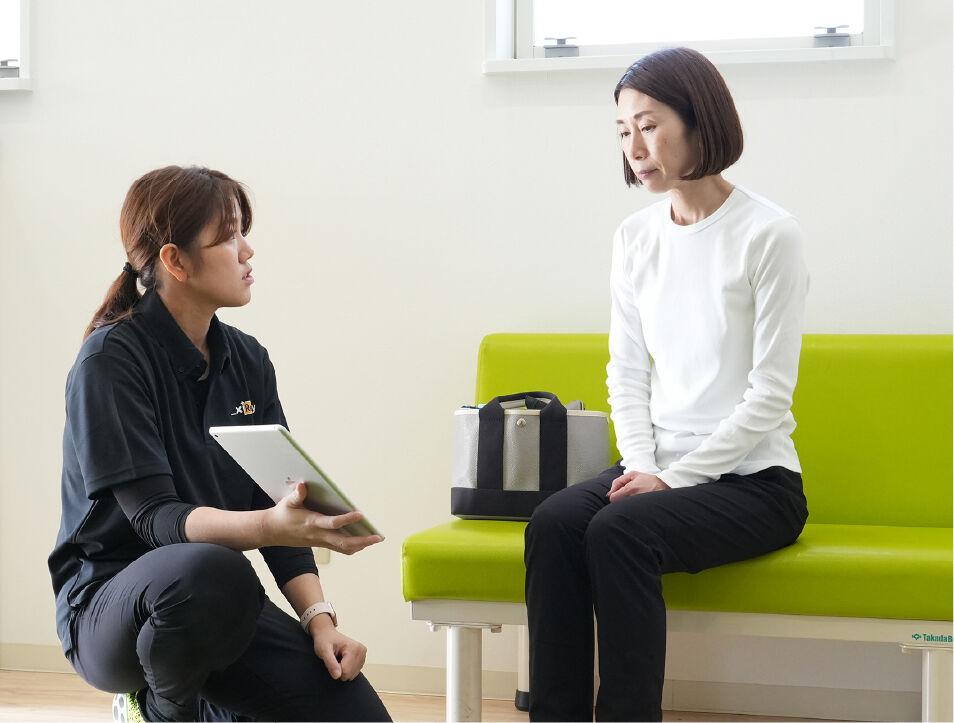
交通事故治療では
を併用して通院することも可能です。
例えば
整形外科→検査・診断
整骨院→施術・リハビリ
という形で通院される方も多くいらっしゃいます。
岸和田の HAREYAKA+Rebody 整骨院では
整形外科と併用しながらの通院もサポートしています。
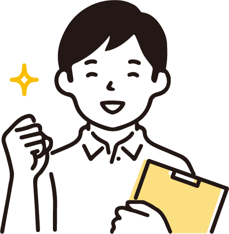
岸和田の HAREYAKA+Rebody 整骨院では
事故後のカラダの状態を丁寧に確認しながら
回復までサポートいたします。
施術費負担は0円です

病院等他の医療機関との
併用もOKです
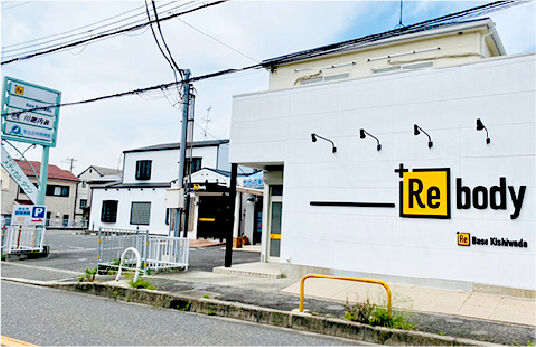
多数のご利用者様を
施術した実績がございます
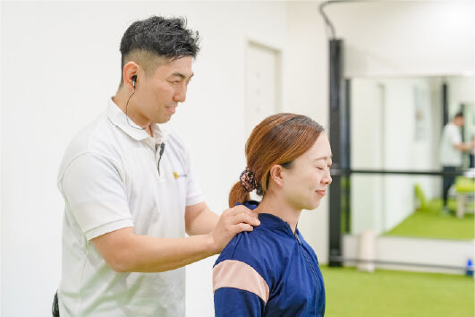
カラダの専門国家資格、
柔道整復師を取得した先生が
施術を行います！
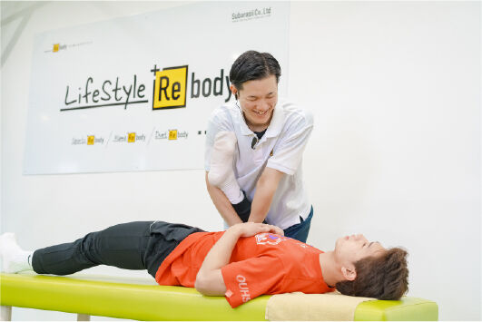
全国の専門家に
技術指導を行うレベルの
確かな施術
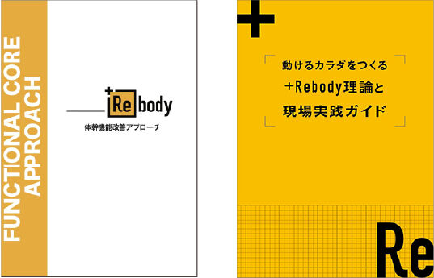
T.H様 女性 78歳 熊取町
右腰側わん症でいろいろな所の痛みが出て、その都度先生が治療して下さり助かっています。
肩が痛い日もあれば足の進みが悪い日もあり、でも治療と運動のおかげで帰りは軽やかになりやっぱり来てよかったと毎回思っています。
先生達の親身になって話を聞いて下さり気分的にも楽にして下さるので、長い間お世話になりありがとうございます。
「免責事項」お客様個人の感想であり、効果効能を保証するものではありません。

交通事故の施術は被害者様の場合は基本的に自賠責保険が適応されるため
負担金は0円でお受けいただけます。
どの医療機関（整骨院・病院・整形外科）で施術を受けるかは患者様の自由です。
はい、大丈夫です。その旨を保険会社のご担当者様にお伝えください。 また病院などと併用して通院いただくことも可能です。
事故発生からおおよそ2週間以内であれば交通事故として施術をお受けいただくことが可能です。 経過時間が長いほど交通事故との因果関係がわかりづらくなるため、 できるだけ早く施術を始められることをおすすめします。
交通事故のケガは、
見た目では分からないカラダのダメージが残ることがあります。
大切なのは
痛みのある場所だけを見ることではなく
事故によって崩れた体のバランスを整えること。
岸和田の HAREYAKA＋Rebody 整骨院では
整える 安定させる 再教育する
という流れで、カラダが本来の状態へ戻るようサポートしています。
交通事故後のカラダの不調でお悩みの方はお気軽にご相談ください。
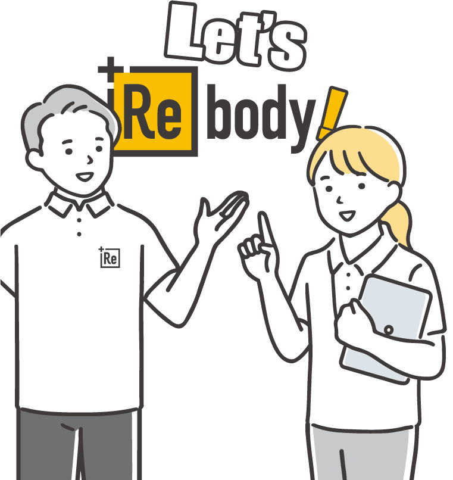